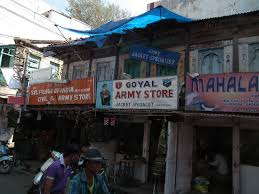

HTML Image

MHOW
Mhow, officially known as Dr Ambedkar Nagar,[2] is a cantonment in the Indore District in Madhya Pradesh state of India. It is located 23 kilometres (14 mi) south of Indore city towards Mumbai on the Mumbai-Agra Road. The town was renamed as Dr Ambedkar Nagar in 2003, by the Government of Madhya Pradesh.
1.geographic loc
it is situated near indore.Country India
State Madhya Pradesh
District Indore
Elevation 556 m (1,824 ft)
Population (2011[1])
• Total 85,023
Language
• Official Hindi
Time zone IST (UTC+5:30)
PIN 453441
Telephone code 07324
2.how to reach by air
BY FLIGHT
There are no regular flights from other major cities of the country to Mhow. Nearest airport is Indore Airport.
Mhow
22 km away
Indore Airport (IDR), Indore, Madhya Pradesh
Mhow
186 km away
Bhopal Airport (BHO), Bhopal, Madhya Pradesh
3.how to reach by road
BY TRAIN
Mhow is well connected to other major cities of the country via regular trains.
Railway Station(s): Mhow (MHOW)
4.where to stay
Popular Locations in indore. All of indore; Vijay Nagar; Railway station; A.B.Road; Bhawar kuan; Bombay Hospital; SouthTuko ganj; + More. OYO PROMISE. Free Breakfast; AC; Free Wifi; TV; Spotless Linen; Clean Bathroom. No Results found. There are no hotels in your search criteria, We'll be here soon! Partner With Us.
5.what to see
Tourist spots in and around Mhow include:
Patalpani waterfall
Mehndi Kund Water Fall
Choral Dam,
Nakheri Dam
Berchha Dam
Tinchha Water Fall
Janapav hill Temple
Jaam Gate
Bamniya Kund Water Fall
Sitla Mata Water Fall in Manpur
Kala Kund
Choral River
Raj Mahal of Raja Rajendra Singh Solanki
Wanchoo Point
i am doing itpm07
i am learning html
html is interesting
work is worship